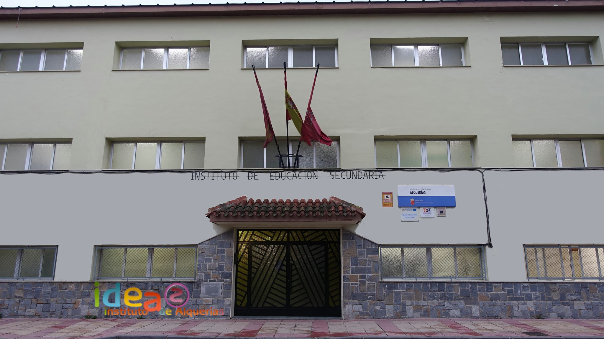

<div class="container-fluid mt-5">
    <br>

    <h1 class="mt-5 text-center">Bienvenido a la página principal del IES Alquerías</h1>
    <br>

    <div class="container">
        <div class="row">
            <div class="col-sm-7">
                
            </div>
            <div class="col-sm-5" style="overflow-y: scroll; max-height: 25em;">
                <a class="twitter-timeline" href="https://twitter.com/iesdealquerias?ref_src=twsrc%5Etfw">Tweets de IES
                    de
                    Alquerías</a>
            </div>
        </div>

    </div>

    <script>
        function twit(d, s, id) {
            var js,
                fjs = d.getElementsByTagName(s)[0];
            if (!d.getElementById(id)) {
                js = d.createElement(s);
                js.id = id;
                js.src = '//platform.twitter.com/widgets.js';
                fjs.parentNode.insertBefore(js, fjs);
            }
        }
        
        twit(document, 'script', 'twitter-wjs');
    </script>

</div>